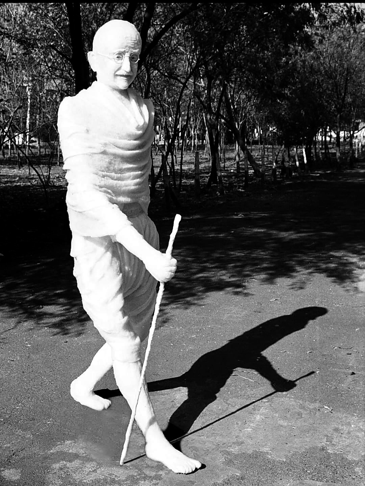
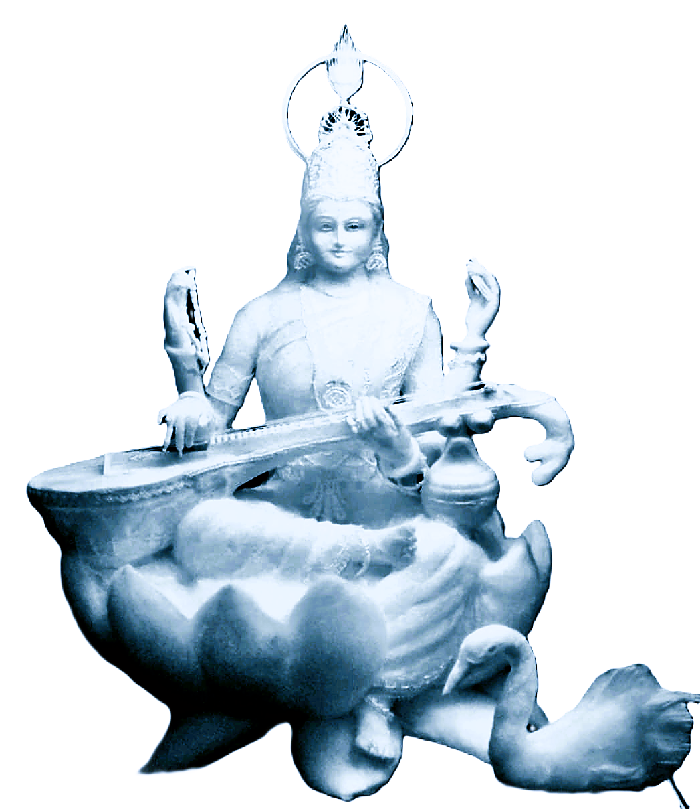
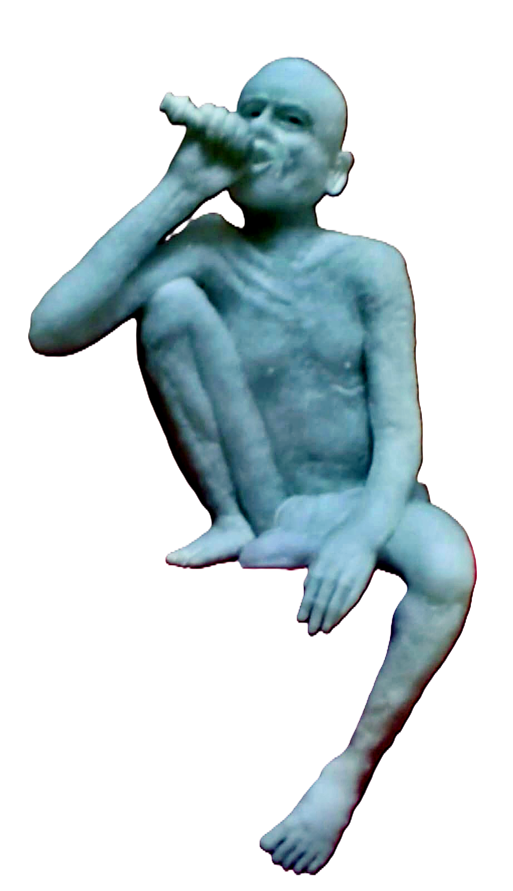

Nashik, India
Anant Khairnar works in a material almost no one else does — raw cotton, shaped, layered, and hardened into figures that hold the softness of the fiber and the permanence of stone. Eco-friendly, biodegradable, and unlike anything else in Indian sculpture.
View the PortfolioRecord
The Mahatma Gandhi sculpture shown above stands 7 feet 6 inches tall, built entirely from cotton — the largest cotton sculpture in the world, holding the Guinness World Record. It captures Gandhi’s presence with the same fine detail as marble or bronze, but in a fraction of the weight, and none of the waste.
Selected Works

Plate 14
Saraswati

Plate 13
Gajanan Maharaj